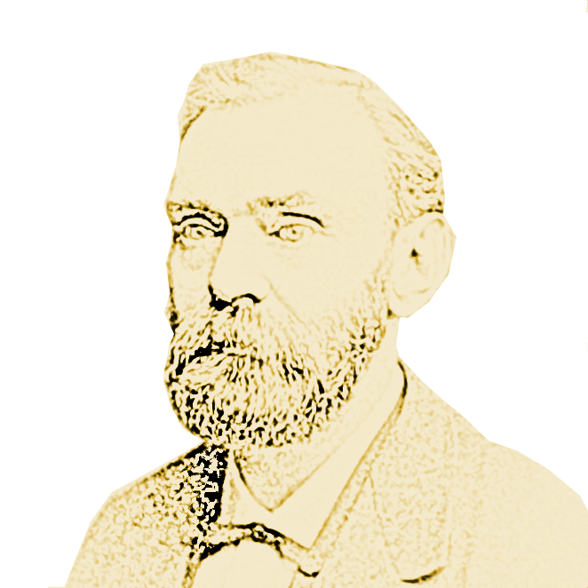
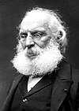

Liste der Friedensnobelpreisträger:innen
Friedensnobelpreisträger des Jahres 1901
Friedensnobelpreisträger des Jahres 1902
Friedensnobelpreisträger des Jahres 1903
Friedensnobelpreisträger des Jahres 1904
Friedensnobelpreisträger des Jahres 1907
Friedensnobelpreisträger des Jahres 1908
Friedensnobelpreisträger des Jahres 1909
Friedensnobelpreisträger des Jahres 1901
Henry Dunant (1828-1919)
Schweiz
Begründung für die Preisvergabe:Gründer des Internationalen Komitees vom Roten Kreuz
Frédéric Passy (1822-1912)
Frankreich
 Begründung für die Preisvergabe:Gründer der „Französischen Gesellschaft der Friedensfreunde“ („Internationale Friedensliga“)
Friedensnobelpreisträger des Jahres 1902
Élie Ducommun (1833–1906)
Schweiz
Begründung für die Preisvergabe:Leiter des Berner Internationalen Ständigen Friedensbüros der „Interparlamentarischen Union für internationale Schiedsgerichtbarkeit“
Albert Gobat (1843–1914)
Schweiz
Begründung für die Preisvergabe:Leiter des Zentralbüros der „Interparlamentarischen Union für internationale Schiedsgerichtbarkeit“
Friedensnobelpreisträger des Jahres 1903
William Randal Cremer (1828–1908)
Vereinigtes Königreich
Begründung für die Preisvergabe:Gründer der „Interparlamentarischen Union für internationale Schiedsgerichtbarkeit“
Friedensnobelpreisträger des Jahres 1904
Institut de Droit international (gegründet 1873)
Belgien
Begründung für die Preisvergabe:Wirken des Instituts für die Weiterentwicklung des internationalen Rechts
Friedensnobelpreisträger des Jahres 1905
Bertha von Suttner (1843–1914)
Östereich-Ungarn
Begründung für die Preisvergabe:Ihr Lebenswerk, unter anderem der Roman Die Waffen nieder!, regte Nobel vermutlich zur Stiftung des Friedensnobelpreises an
Friedensnobelpreisträger des Jahres 1906
Theodore Roosevelt (1858–1919)
Vereinigte Staaten
Begründung für die Preisvergabe:vermittelte beim Friedensvertrag zwischen Russland und Japan 1905
Friedensnobelpreisträger des Jahres 1907
Ernesto Teodoro Moneta (1833–1918)
Königreich Italien
Begründung für die Preisvergabe:Präsident der Lombardischen Friedensliga /div>
Louis Renault (1843–1918)
Frankreich
Begründung für die Preisvergabe:spielte eine herausragende Rolle bei verschiedenen internationalen Kongressen, insbesondere den Haager Friedenskonferenzen und den Tagungen der Haager Konferenz für Internationales Privatrecht
Friedensnobelpreisträger des Jahres 1908
Klas Pontus Arnoldson (1844–1916)
Schweden
Begründung für die Preisvergabe:Gründer der Schwedischen Friedens- und Schiedsliga
Fredrik Bajer (1837–1922)
Dänemark
Begründnung für die Preisverhabe: Ehrenpräsident des Ständigen Internationalen Friedensbüros
Friedensnobelpreisträger des Jahres 1909
Auguste Beernaert (1829–1912)
Belgien
Begründung für die Preisvergabe:Mitglied des Internationalen Schiedsgerichtshofs in Den Haag
Friedensnobelpreisträger des Jahres 1909
Paul Henri d’Estournelles de Constant
Frankreich
Begründung für die Preisvergabe: Gründer und Präsident der Französischen Parlamentarischen Gruppe für freiwillige Schiedsgerichtsbarkeit und Gründer des Komitees für die Verteidigung nationaler Interessen und internationaler Versöhnung